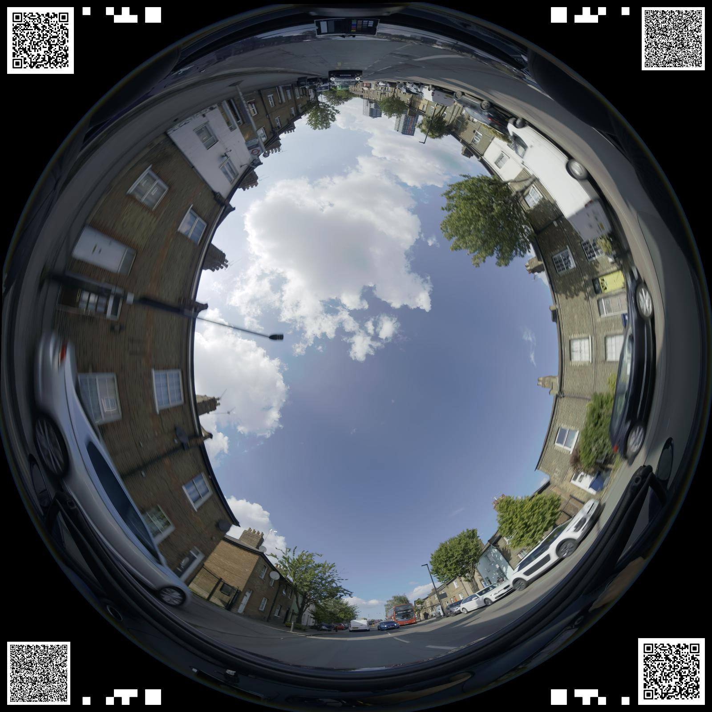
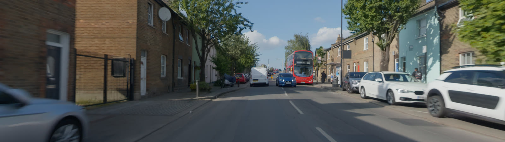
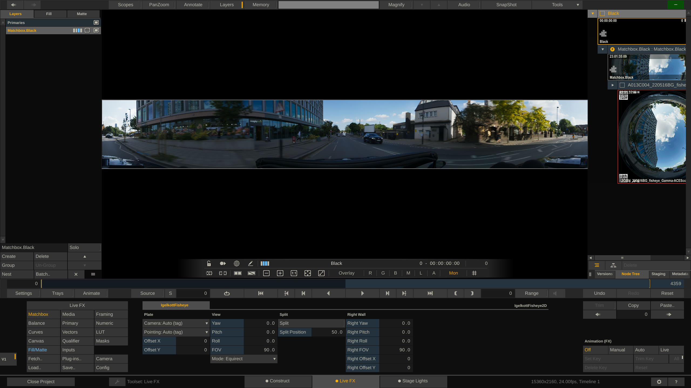
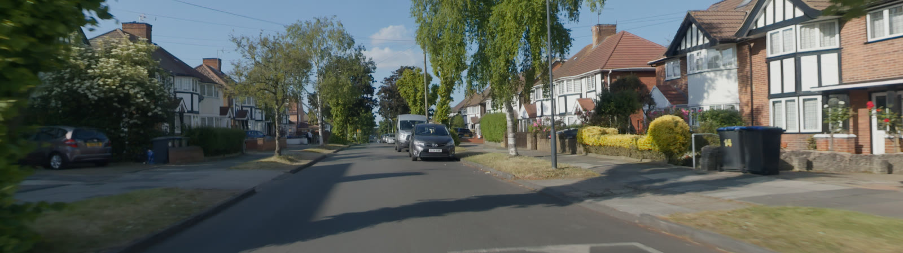
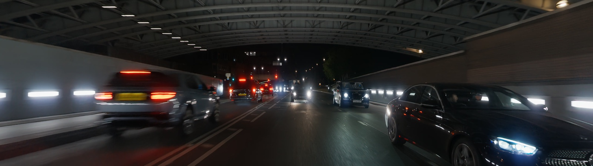
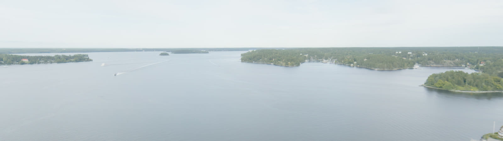

This circle is everything the camera saw
The usual route blows it up into a 16K equirect, 118 million pixels with no new detail, and then cuts the wall back out of it. IgelkottFisheye draws the wall straight from the circle.


Fewer pixels to read, more frames on the wall
Read from disk on the same workstation, the equirect route stalls at 23 fps, below the plate's 25. The node plays 68, and uses less of the graphics card doing it.

Live FX 9.9, Free Run, NotchLC, plate A007C001 on a 7680 × 2160 wall, read from the drive, 5–6 runs each. Threadripper 3960X (1.7 of 24 cores in use), Radeon RX 9070 XT 16 GB, 256 GB, Windows 10 Pro 22H2, Corsair MP600 PRO NH 8 TB. One machine, not a minimum.
The smaller file plays two and a half times as long from one drive
An hour of fisheye is 2.6 TB in NotchLC, the same hour as equirect 6.6 TB. And the drive reads more fisheye frames a second than the plate needs, even an older one where equirect falls short.
The nine free demo plates. Older drive: Intel 660p, PCIe 3, the slowest plate, the drive alone. On a PCIe 4 drive both stay above 25.
One resample instead of two keeps the detail
Every resample softens the picture, and the equirect route has two. Measured on the same plates, the node keeps a fifth more detail across the wall, and more still looking down.
Cycles per wall pixel, 4K wall at FOV 90, Venice 2 plates, slanted edge (ISO 12233).
And one node fills the whole 360°, across 15360 × 2160

Nine plates. Put one on your wall tonight
Each plate carries a pixel tag with its camera and direction, so the node sets itself. Setup in Live FX takes five steps: see the README.






Free, also commercially, for playing Igelkott plates. Live FX 9.9 on Mac or Windows, or PIXERA on Windows.